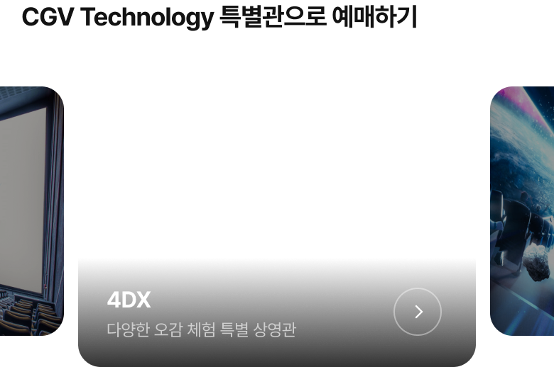

<div class="wrap_inner">
    <strong class="badge">예매하기</strong>

    <div class="device_wrap">
        <div>
            <p class="header"></p>
            <ul>
                <li style="padding-bottom:40px;">
                    
                </li>
                <li style="padding-left:15px; padding-right:15px; padding-bottom:57px;"></li>
                <li clsss="video video_05" style="padding-bottom:57px">
                    
                    <video autoplay muted playsinline style="width:280px !important; height:220px !important; object-fit:fill; border-radius:16px; position:absolute; top:39px; left:54px; z-index:1;">
                        <source src="https://file.notion.so/f/f/2bd9c317-ae44-4d19-bc47-9cca532d2fe9/3138a7d7-aaa9-4e84-8f9f-e88be5c74616/20240131114637959.mp4?id=8e12bae0-8144-4c0d-9fda-d5f02e0c9063&table=block&spaceId=2bd9c317-ae44-4d19-bc47-9cca532d2fe9&expirationTimestamp=1720159200000&signature=86KdOmleYoS1mWPq0Qpx5uJRiiruL61RdrbiIi2U0eA&downloadName=20240131114637959.mp4" type="video/mp4">
                    </video>
                </li>
                <li style="padding-left:15px; padding-bottom:50px;">
                    
                    <!-- swiper -->
                    <div class="main_visual" style="padding-top:14px !important; margin-top:0 !important;">
                        <div class="visual swiper-container show">
                            <ul class="swiper-wrapper">
                                <li class="swiper-slide"></li>
                                <li class="swiper-slide"></li>
                                <li class="swiper-slide"></li>
                            </ul>
                        </div>
                    </div>
                    <!-- //swiper -->
                </li>
                <li style="padding-bottom:50px;">
                    
                </li>
            </ul>
        </div>
        <p class="bottom"></p>
    </div>
    <div class="txt_wrap_s">
        <p>
            영화는 <strong>영화별, 극장별로 예매가능</strong>하며<br>
            <strong>아이스콘, 특별관까지</strong> 많은 정보를<br>
            명확하고 싶게 구성하였습니다.
        </p>
    </div>
</div>

<script>
    $(function(){
           var option_sec01 = {
               slidesPerView: 2.1,
               spaceBetween: 5,
               pagination: {
                   el: ".swiper-pagination",
                   clickable: true,
               },
           };
           var swiper = new Swiper('.main_visual .visual.swiper-container', option_sec01);

           setTimeout(()=>{
            $('.txt_wrap_s, .device_wrap').addClass('active');
        },500);
    });
</script>

<style>
    .device_wrap .header {z-index:3 !important;}
    .wrap_inner {align-items:center;}
    .badge {position:absolute; top:0; left:0;}
    .txt_wrap_s {opacity:0; transition:all 0.5s;}
    .txt_wrap_s.active {opacity:1;}
    .txt_wrap_s p {opacity:0; transform:translateY(300px); transition:all 0.5s 0.25s;}
    .txt_wrap_s.active p {opacity:1; transform:translateY(0);}
    .main_visual .visual .swiper-wrapper .swiper-slide {padding:0px 3px 0 !important;}

    .device_wrap {margin-left:280px;}
    .device_wrap > div > ul li:first-of-type {padding-top:0px !important;}

    ul li.show img {position:relative; z-index:1; transition:all 0.2s; opacity:0.5;}
    ul li.show img.on {opacity:1;}
    .device_wrap img {width:100%;}
    .device_wrap li.movie img {transition:all 0.35s;}

    .video > img {position:relative; z-index:2;}
    .video_05 video {width:280px !important; height:220px !important; object-fit:fill; border-radius:16px; position:absolute; top:0;}
    
</style>